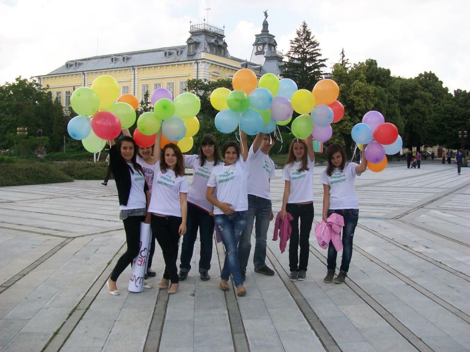

Благотворителна фондация "Защото ни е грижа" е формирана през 2011г. Нейн основател е Ренета Димитрова - студентка и доброволка в различни инициативи на територията на град Варна и град Силистра. Фондацията е създадена с цел всеки месец да се създава ралично мероприятие, в което всеки гражданин може да се включи както с финансова, така и с всякаква друга помощ - разработване и разпространяване на рекламни материали за мероприятията, събиране на средства за дадена кауза и др. След 8години от формирането на нашата фондация екипа ни се състои от 200 добровци. Нашата мисия е да помагаме на колкото се може повече хора, които имат нужда от нас всеки ден!
